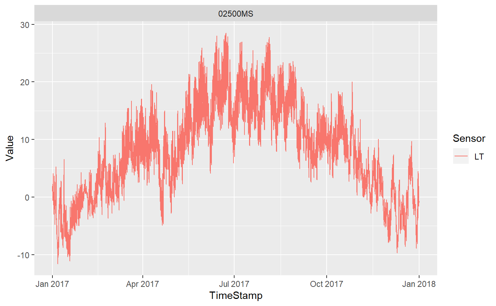

Meteo.RmdFirst of all we have to load the MonalisR package
## Registered S3 method overwritten by 'geojsonio':
## method from
## print.location dplyrThe database we use in this Package is the CKAN API for meteorological data exposed by the OpenData Portal South Tyrol.
We can extract the stations by using getMeteoStat
## SCODE NAME_D NAME_I
## 1 89940PG ETSCH BEI SALURN ADIGE A SALORNO
## 2 08155PG ETSCH BEI EYRS ADIGE A ORIS
## 3 45200SF Gsies Pfinnalm Casies Malga Pfinn
## 4 82500WS Rittnerhorn Corno del Renon
## 5 45100WS Gsies Regelspitze Casies Cima Regola
## 6 00390SF Graun Schöneben Curon Belpiano
## 7 06040WS Sulden Schöntaufspitze Solda Cima Beltovo
## 8 06090SF Sulden Madritsch Solda Madriccio
## 9 35100WS Jaufenkamm Cresta del Giovo
## 10 50400WS Prettau Lengspitze Predoi Pizzo Lungo
## 11 50360SF Prettau Merbalm Predoi Malga Merbe
## 12 61690SF Abtei Piz La Ila Badia Piz La Ila
## 13 61720WS Abtei Piz Pisciadù Badia Cima Pisciadù
## 14 19850PG ETSCH BEI TÖLL ADIGE A TEL
## 15 29850PG ETSCH BEI SIGMUNDSKRON ADIGE A PONTE ADIGE
## 16 36750PG MAREITERBACH BEI STERZING RIO RIDANNA A VIPITENO
## 17 59450PG AHR BEI ST.GEORGEN AURINO A S. GIORGIO
## 18 69790PG EISACK BEI BRIXEN ISARCO A BRESSANONE
## 19 85550PG ETSCH BEI BRANZOLL ADIGE A BRONZOLO
## 20 20720WS Pfelders Rauhjoch Monte Scabro di Plan
## 21 20690SF Pfelders Grünboden Prati di Plan
## 22 05950PG ETSCH BEI SPONDINIG ADIGE A SPONDIGNA
## 23 91210WS Toblach Hochebenkofel Dobbiaco Cima Piatta Alta
## 24 91180SF Sexten Rotwandwiesen Sesto Prati di Croda Rossa
## 25 24300SF Ulten Rossbänke Ultimo Pian dei Cavalli
## 26 78480SF Deutschnofen Obereggen Nova Ponente Obereggen
## 27 15000SF Schnals Teufelsegg Senales Teufelsegg
## 28 34200WS Signalgipfel Wilder Freiger Anticima Cima Libera
## 29 31810SF Ladurns Ladurns
## 30 66000WS Pfunders Dannelspitz Fundres Punta di Dan
## 31 66100SF Pfunders Stutzenalm Fundres Malga Stutzen
## 32 37230PG EISACK BEI FREIENFELD ISARCO A CAMPO DI TRENS
## 33 80100SF Pens Tramintal Pennes Val Tramin
## 34 61050PG RIENZ BEI STEGEN RIENZA A STEGONA
## 35 90000SF Laurein Clozner Loch Lauregno Clozner Loch
## 36 82910PG TALFER BEI BOZEN TALVERA A BOLZANO
## 37 15050WS Schnals Grawand Senales Croda d. Cornacchie
## 38 73950PG GRÖDNERBACH BEI PONTIVES RIO GARDENA A PONTIVES
## 39 37100MS Sterzing Vipiteno
## 40 20500MS Pfelders Plan
## 41 19300MS Naturns Naturno
## 42 80300MS Pens Pennes
## 43 50500MS Prettau Predoi
## 44 34500MS Ridnaun Ridanna
## 45 56900MS Sand i.T. Mühlen Campo Tures Molini
## 46 54500MS Rein in Taufers Riva di Tures
## 47 69900MS Plose Plose
## 48 09700MS Schlanders Silandro
## 49 82200MS Sarnthein Sarentino
## 50 88820MS Salurn Salorno
## 51 59700MS Bruneck Brunico
## 52 85120MS Deutschnofen Nova Ponente
## 53 83200MS Bozen Bolzano
## 54 86900MS Auer Ora
## 55 39100MS Brixen Vahrn Bressanone
## 56 08200MS Laas - Eyrs Lasa - Oris
## 57 23200MS Meran Merano
## 58 47400MS Antholz Obertal Anterselva di Sopra
## 59 86600MS Laimburg Laimburg
## 60 37700MS Franzensfeste Grasstein Fortezza Le Cave
## 61 74900MS Barbian Kollmann Barbiano Colma
## 62 22950PG PASSER BEI MERAN PASSIRIO A MERANO
## 63 03750PG RAMBACH BEI LAATSCH RIO RAM A LAUDES
## 64 42850PG PRAGSERBACH BEI AUSSERPRAGS RIO BRAIES A BRAIES DI FUORI
## 65 51450PG AHR BEI STEINHAUS AURINO A CADIPIETRA
## 66 20750PG PFELDERERBACH BEI ESCHBAUM RIO PLAN A ESCHBAUM
## 67 26950PG FALSCHAUER BEI LANA VALSURA A LANA
## 68 91850PG DRAU BEI VIERSCHACH DRAVA A VERSCIACO
## 69 89190MS Kaltern Oberplanitzing Caldaro Pianizza di Sopra
## 70 22210MS St. Martin in Passeier S. Martino in Passiria
## 71 25900MS St. Walburg S. Valburga
## 72 73500MS Wolkenstein Selva di V. Gardena
## 73 68600MS Vals Valles
## 74 02200MS St. Valentin a.d. Haide S. Valentino alla Muta
## 75 03100MS Taufers i.M. Tubre
## 76 41000MS Toblach Dobbiaco
## 77 75600MS Völs am Schlern Fie' allo Sciliar
## 78 62600MS St. Martin in Thurn S. Martino in Badia
## 79 74200MS Seiser Alm Zallinger Alpe di Siusi Zallinger
## 80 11400MS Hintermartell Alta Val Martello
## 81 02500MS Marienberg Monte Maria
## 82 33500MS Pfitsch St. Jakob Val di Vizze San Giacomo
## 83 44500MS St. Magdalena in Gsies S. Maddalena in Casies
## 84 06400MS Sulden Solda
## 85 65600MS Terenten Terento
## 86 24400MS Ulten Weißbrunn Ultimo Fontana Bianca
## 87 43200MS Welsberg Monguelfo
## 88 78305MS Welschnofen Nova Levante
## 89 56500MS Mühlwald Selva dei Molini
## 90 42700MS St. Veit in Prags S. Vito di Braies
## 91 15800MS Schnals Vernagt Senales Vernago
## 92 07740WS Trafoi Zaufenkofel Trafoi Zaufenkofel
## 93 15590SF Schnals Finail Senales Finale
## 94 65350MS Obervintl Vandoies
## 95 89950SE Fennberger See Lago di Favogna
## 96 02250SE Haidersee Lago di S.Valentino alla Muta
## 97 78150SE Karersee Lago di Carezza
## 98 89940GW Etsch - Salurn Adige - Salorno
## 99 01080SF Melag Pratznerberg Melago Monte Pratzen
## 100 20050SF Timmelsalm Alpe del Tumulo
## 101 82910MS Jenesien San Genesio
## 102 47150SE Antholzersee Lago di Anterselva
## 103 89357PG Grosser Kalterergraben Grosser Kalterergraben
## 104 35205SF Ratschings Wasserfaller Alm Racines Malga Wasserfaller
## 105 24170WS Ulten Weißbrunnspitz Ultimo Cima di Fontana Bianca
## 106 53200SF Weissenbach Fadner Alm Rio Bianco Malga Fadner
## 107 42830SF Prags Rossalm Braies Alpe Cavallo
## 108 27100MS Gargazon Gargazzone
## 109 89155SE Großer Montiggler See Lago Grande di Monticolo
## 110 89355SE Kalterer See Lago di Caldaro
## 111 85700MS Branzoll Bronzolo
## 112 89055SE Kleiner Montiggler See Lago Piccolo di Monticolo
## 113 42150SE Pragser Wildsee Lago di Braies
## 114 39050SE Vahrner See Lago di Varna
## 115 79450SE Wolfsgrubener See Lago di Costalovara
## 116 10750PG Plimabach - Zufallhütte Plimabach - Zufallhütte
## 117 83450PG EISACK BEI BOZEN SÜD ISARCO A BOLZANO SUD
## NAME_L NAME_E ALT
## 1 ETSCH BEI SALURN ETSCH BEI SALURN 210.00
## 2 ETSCH BEI EYRS ETSCH BEI EYRS 873.99
## 3 Gsies Pfinnalm Gsies Pfinnalm 2152.00
## 4 Rittnerhorn Rittnerhorn 2260.00
## 5 Gsies Regelspitze Gsies Regelspitze 2747.00
## 6 Graun Schöneben Graun Schöneben 2040.00
## 7 Sulden Schöntaufspitze Sulden Schöntaufspitze 3328.00
## 8 Sulden Madritsch Sulden Madritsch 2825.00
## 9 Jaufenkamm Jaufenkamm 2145.00
## 10 Prettau Lengspitze Prettau Lengspitze 3105.00
## 11 Predoi Malga Merbe Prettau Merbalm 2006.00
## 12 Val Badia - Piz La Ila Abtei Piz la Ila 2050.00
## 13 Val Badia Piz Pisciadù Abtei Piz Pisciadù 2985.00
## 14 ETSCH BEI TÖLL ETSCH BEI TÖLL 506.34
## 15 ETSCH BEI SIGMUNDSKRON ETSCH BEI SIGMUNDSKRON 237.04
## 16 MAREITERBACH BEI STERZING MAREITERBACH BEI STERZING 939.59
## 17 AHR BEI ST.GEORGEN AHR BEI ST.GEORGEN 815.77
## 18 EISACK A PERSENON EISACK BEI BRIXEN 551.54
## 19 ETSCH BEI BRANZOLL ETSCH BEI BRANZOLL 226.05
## 20 Pfelders Rauhjoch Pfelders Rauhjoch 2926.00
## 21 Pfelders Grünboden Pfelders Grünboden 2015.00
## 22 ETSCH BEI SPONDINIG ETSCH BEI SPONDINIG 882.34
## 23 Toblach Hochebenkofel Toblach Hochebenkofel 2906.00
## 24 Sexten Rotwandwiesen Sexten Rotwandwiesen 1910.00
## 25 Ulten Rossbänke Ulten Rossbänke 2255.00
## 26 Deutschnofen Obereggen Deutschnofen Obereggen 2125.00
## 27 Schnals Teufelsegg Schnals Teufelsegg 3035.00
## 28 Signalgipfel Wilder Freiger Signalgipfel Wilder Freiger 3399.00
## 29 Ladurns Ladurns 1960.00
## 30 Pfunders Dannelspitz Pfunders Dannelspitz 2808.00
## 31 Pfunders Stutzenalm Pfunders Stutzenalm 2050.00
## 32 EISACK BEI FREIENFELD EISACK BEI FREIENFELD 927.36
## 33 Pens Tramintal Pens Tramintal 2100.00
## 34 RIENZ BEI STEGEN RIENZ BEI STEGEN 808.71
## 35 Laurein Clozner Loch Laurein Clozner Loch 2165.00
## 36 TALFER A BULSAN TALFER BEI BOZEN 287.71
## 37 Schnals Grawand Schnals Grawand 3220.00
## 38 DERJON A PUNTIVES GRÖDNERBACH BEI PONTIVES 1190.00
## 39 Sterzing Sterzing 943.00
## 40 Pfelders Pfelders 1640.00
## 41 Naturns Naturns 541.00
## 42 Pens Pens 1450.00
## 43 Prettau Prettau 1450.00
## 44 Ridnaun Ridnaun 1364.00
## 45 Sand i.T. Mühlen Sand i.T. Mühlen 851.00
## 46 Rein in Taufers Rein in Taufers 1562.00
## 47 Plose Plose 2472.00
## 48 Sulaneres Schlanders 698.00
## 49 Sarnthein Sarnthein 970.00
## 50 Salurn Salurn 212.00
## 51 Burnech Bruneck 828.00
## 52 Deutschnofen Deutschnofen 1470.00
## 53 Bulsan Bolzano 254.00
## 54 Auer Auer 250.00
## 55 Persenon Brixen 590.00
## 56 Laas - Eyrs Laas - Eyrs 874.00
## 57 Maran Meran 330.00
## 58 Antholz Obertal Antholz Obertal 1320.00
## 59 Laimburg Laimburg 224.00
## 60 Franzensfeste Grasstein Franzensfeste Grasstein 850.00
## 61 Barbian Kollmann Barbian Kollmann 490.00
## 62 PASSER A MARAN PASSER BEI MERAN 355.88
## 63 RAMBACH BEI LAATSCH RAMBACH BEI LAATSCH 942.14
## 64 RUF DE BRAIES A BRAIES DEDORA PRAGSERBACH BEI AUSSERPRAGS 1122.81
## 65 AHR BEI STEINHAUS AHR BEI STEINHAUS 1044.78
## 66 PFELDERERBACH BEI ESCHBAUM PFELDERERBACH BEI ESCHBAUM 1569.26
## 67 FALSCHAUER BEI LANA FALSCHAUER BEI LANA 270.50
## 68 DRAU BEI VIERSCHACH DRAU BEI VIERSCHACH 1127.32
## 69 Kaltern Oberplanitzing Kaltern Oberplanitzing 495.00
## 70 St. Martin in Passeier St. Martin in Passeier 586.00
## 71 St. Walburg St. Walburg 1142.00
## 72 Sëlva Sëlva 1594.00
## 73 Vals Vals 1410.00
## 74 St. Valentin a.d. Haide St. Valentin a.d. Haide 1499.00
## 75 Taufers i.M. Taufers i.M. 1235.00
## 76 Toblach Toblach 1219.00
## 77 Völs am Schlern Völs am Schlern 840.00
## 78 S. Martin de Tor S. Martin de Tor 1150.00
## 79 Seiser Alm Zallinger Seiser Alm Zallinger 2055.00
## 80 Hintermartell Hintermartell 1720.00
## 81 Marienberg Marienberg 1310.00
## 82 Pfitsch St. Jakob Pfitsch St. Jakob 1440.00
## 83 St. Magdalena in Gsies St. Magdalena in Gsies 1412.00
## 84 Sulden Sulden 1907.00
## 85 Terenten Terenten 1349.00
## 86 Ulten Weißbrunn Ulten Weißbrunn 1900.00
## 87 Valsperch Welsberg 1131.00
## 88 Welschnofen Welschnofen 1128.00
## 89 Mühlwald Mühlwald 1141.00
## 90 St. Veit in Prags St. Veit in Prags 1285.00
## 91 Schnals Vernagt Schnals Vernagt 1700.00
## 92 Trafoi Zaufenkofel Trafoi Zaufenkofel 2475.00
## 93 Schnals Finail Schnals Finail 1950.00
## 94 Obervintl Obervintl 746.00
## 95 Fennberger See Fennberger See 0.00
## 96 Haidersee Haidersee 1448.70
## 97 Karersee Karersee 1524.30
## 98 Etsch - Salurn Etsch - Salurn 0.00
## 99 Melag Pratznerberg Melag Pratznerberg 2450.00
## 100 Timmelsalm Timmelsalm 2230.00
## 101 Jenesien Jenesien 970.00
## 102 Antholzersee Antholzersee 1640.46
## 103 Grosser Kalterergraben Grosser Kalterergraben 220.00
## 104 Ratschings Wasserfaller Alm Ratschings Wasserfaller Alm 1907.00
## 105 Ulten Weißbrunnspitz Ulten Weißbrunnspitz 3253.00
## 106 Weissenbach Fadner Alm Weissenbach Fadner Alm 2155.00
## 107 Prags Rossalm Prags Rossalm 2340.00
## 108 Gargazon Gargazon 254.00
## 109 Großer Montiggler See Großer Montiggler See 491.88
## 110 Kalterer See Kalterer See 213.10
## 111 Branzoll Branzoll 226.00
## 112 Kleiner Montiggler See Kleiner Montiggler See 518.34
## 113 Pragser Wildsee Pragser Wildsee 1489.92
## 114 Vahrner See Vahrner See 682.06
## 115 Wolfsgrubener See Wolfsgrubener See 1177.39
## 116 Plimabach - Zufallhütte Plimabach - Zufallhütte 0.00
## 117 EISACK A BULSAN SUD EISACK BEI BOZEN SÜD 235.03
## LONG LAT
## 1 11.20262 46.24333
## 2 10.64963 46.62188
## 3 12.20960 46.84170
## 4 11.46040 46.61560
## 5 12.20050 46.85610
## 6 10.49790 46.80640
## 7 10.62860 46.50290
## 8 10.61440 46.49380
## 9 11.31840 46.84010
## 10 12.13100 47.01590
## 11 12.12210 47.03620
## 12 11.90360 46.56500
## 13 11.82500 46.53140
## 14 11.07961 46.67202
## 15 11.30381 46.48316
## 16 11.43143 46.88395
## 17 11.93472 46.81704
## 18 11.65720 46.70738
## 19 11.31525 46.41368
## 20 11.11460 46.82890
## 21 11.10160 46.79200
## 22 10.60352 46.63648
## 23 12.25730 46.68020
## 24 12.37040 46.66360
## 25 10.81940 46.46930
## 26 11.54670 46.36360
## 27 10.76470 46.78470
## 28 11.19290 46.96840
## 29 11.36630 46.93480
## 30 11.68710 46.94340
## 31 11.68820 46.92540
## 32 11.47787 46.87070
## 33 11.47740 46.79500
## 34 11.92169 46.79152
## 35 11.02830 46.51340
## 36 11.35018 46.50977
## 37 10.79660 46.77030
## 38 11.63623 46.58271
## 39 11.43860 46.88500
## 40 11.08830 46.79650
## 41 10.99120 46.64770
## 42 11.41440 46.77990
## 43 12.09910 47.03660
## 44 11.30680 46.90910
## 45 11.94740 46.90030
## 46 12.08250 46.94280
## 47 11.73380 46.69860
## 48 10.78030 46.62380
## 49 11.35510 46.64060
## 50 11.18550 46.23620
## 51 11.93150 46.80430
## 52 11.42690 46.42050
## 53 11.31280 46.49770
## 54 11.30500 46.34690
## 55 11.64420 46.73050
## 56 10.64960 46.62490
## 57 11.13660 46.68800
## 58 12.11660 46.87040
## 59 11.28870 46.38250
## 60 11.54880 46.81250
## 61 11.52910 46.59510
## 62 11.17721 46.68396
## 63 10.52390 46.67082
## 64 12.13444 46.73912
## 65 11.98027 46.99459
## 66 11.10271 46.80145
## 67 11.16523 46.62764
## 68 12.33682 46.71759
## 69 11.25250 46.44230
## 70 11.22960 46.78240
## 71 10.98980 46.54170
## 72 11.76840 46.54560
## 73 11.62720 46.84830
## 74 10.52890 46.77590
## 75 10.46150 46.63730
## 76 12.21910 46.72990
## 77 11.50600 46.51340
## 78 11.89790 46.67920
## 79 11.68880 46.51190
## 80 10.72690 46.51690
## 81 10.52130 46.70570
## 82 11.59810 46.96560
## 83 12.24270 46.83530
## 84 10.59530 46.51590
## 85 11.78560 46.83450
## 86 10.83180 46.48680
## 87 12.12890 46.74310
## 88 11.53660 46.42890
## 89 11.87440 46.89010
## 90 12.10000 46.71190
## 91 10.84930 46.73570
## 92 10.53970 46.55560
## 93 10.82240 46.74120
## 94 11.75340 46.81110
## 95 11.18408 46.27422
## 96 10.53453 46.74954
## 97 11.57548 46.40997
## 98 11.20262 46.24333
## 99 10.62470 46.84680
## 100 11.14870 46.91360
## 101 11.33190 46.53040
## 102 12.16239 46.88381
## 103 11.25746 46.36426
## 104 11.29870 46.84560
## 105 10.77400 46.49400
## 106 11.86140 46.92560
## 107 12.11150 46.67120
## 108 11.20080 46.57670
## 109 11.28739 46.42234
## 110 11.25927 46.38586
## 111 11.31110 46.40650
## 112 11.29429 46.43047
## 113 12.08337 46.69598
## 114 11.63454 46.76631
## 115 11.42769 46.52113
## 116 10.67675 46.47625
## 117 11.30278 46.45877## class : SpatialPointsDataFrame
## features : 117
## extent : 611860.4, 757831.9, 5122613, 5213918 (xmin, xmax, ymin, ymax)
## crs : +proj=utm +zone=32 +ellps=GRS80 +towgs84=0,0,0,0,0,0,0 +units=m +no_defs
## variables : 8
## names : SCODE, NAME_D, NAME_I, NAME_L, NAME_E, ALT, LONG, LAT
## min values : 00390SF, Abtei Piz La Ila, Adige - Salorno, AHR BEI ST.GEORGEN, Abtei Piz la Ila, 0, 10.4615, 46.2362
## max values : 91850PG, Wolkenstein, Vipiteno, Wolfsgrubener See, Wolfsgrubener See, 3399, 12.3704, 47.0366and the sensors available for each station with
Analogous to the MONALISA Database in the example before we can access the database with the downloadMeteo function providing key input sich as the code of a single station, the sensor code corresponding to a product or a daterange. By default the data is stored in memory. If you want to download it you need to provide a path and set the csv variable as TRUE
s <- "2017-01-01 00:00"
e <- "2018-01-01 00:00"
a<-downloadMeteo(station_code = "02500MS",
sensor_code = "LT",
datestart = s,
dateend = e)
atib<-as_tibble(a)
atib## # A tibble: 52,518 x 4
## TimeStamp Station Sensor Value
## <dttm> <chr> <chr> <dbl>
## 1 2017-01-01 00:00:00 02500MS LT 1.9
## 2 2017-01-01 00:10:00 02500MS LT 1.8
## 3 2017-01-01 00:20:00 02500MS LT 1.6
## 4 2017-01-01 00:30:00 02500MS LT 1.5
## 5 2017-01-01 00:40:00 02500MS LT 1.5
## 6 2017-01-01 00:50:00 02500MS LT 1.6
## 7 2017-01-01 01:00:00 02500MS LT 1.4
## 8 2017-01-01 01:10:00 02500MS LT 1.5
## 9 2017-01-01 01:20:00 02500MS LT 1
## 10 2017-01-01 01:30:00 02500MS LT 1.1
## # ... with 52,508 more rowsAnd now we can simply Plot the Results using GGplot2

As before the Plots can be done with Leaflet. This could be interesting to explore before the actual data retrieval to diminish the number of processed station data
Now if you want t import other data such as Shapefiles or point files indicating your area of interest you can use some predefined functions. In case yo would like to reduce the dimensionality of the acquired dataset by providing a buffer around apoint file you can use the buffmeteo function. If you want to plot the buffer Zone just add addCircles to the leaflet or use the getBuffershp option in the buffmeteo function. In this example we use a buffer of 10km around one point to see which stations lie within that range. This can be done either graphically
## Warning: package 'sf' was built under R version 3.6.1## Reading layer `Test' from data source `C:\Users\MRossi\Documents\07_Codes\MonalisR_open\vignettes\data\Test.shp' using driver `ESRI Shapefile'
## Simple feature collection with 115 features and 8 fields
## geometry type: POINT
## dimension: XY
## bbox: xmin: 611860.4 ymin: 5122613 xmax: 757831.9 ymax: 5213918
## epsg (SRID): NA
## proj4string: +proj=utm +zone=32 +ellps=GRS80 +units=m +no_defsbuffer=10000
plotMeteoLeaflet() %>% addMarkers(shp$LONG,shp$LAT) %>% addCircles(shp$LONG,shp$LAT,radius=buffer,color = "red")or by looking at the station names within the 10km buffer zone
## Province Shape
## 1 89940PG 89940PG
## 2 88820MS 89940PG
## 3 89950SE 89940PG
## 4 89940GW 89940PG